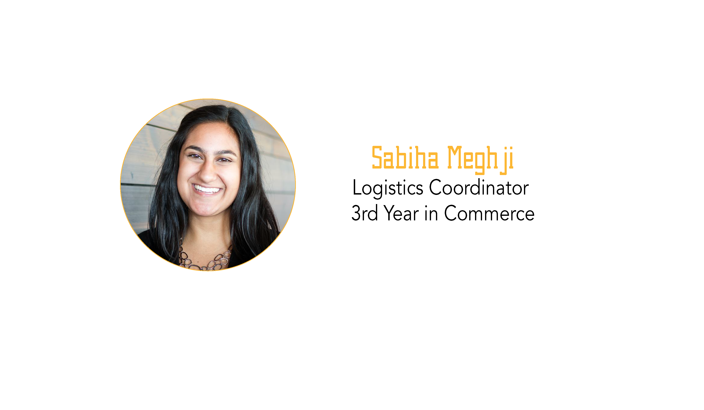

Supporting the Caregivers - Mental Health Challenges Among Aid Workers
Sabiha Meghji - 18 October, 2017

In recent decades, the number of humanitarian aid workers across the globe has increased exponentially. These individuals live and work in environments that promote mental health challenges. A number of psychological problems among aid workers have been discussed including: anxiety, depression, posttraumatic stress disorder, feelings of hopelessness, depersonalization, detachment and burnout. The life or death context associated with humanitarian work and the perceived need to alleviate the suffering of others compels aid workers to overextend themselves. In 2012, mental health conditions were the leading cause of missed work among UNHCR staff.
According to the World Health Organization (WHO), mental health is defined as “a state of well-being in which every individual realizes his or her own potential, can cope with the normal stresses of life, can work productively and fruitfully and is able to make a contribution to her or his community.” Working in the humanitarian sector entails tight deadlines, multiple priorities, heavy workloads, and potentially insecure environments. You do not have to look far to find examples of aid workers struggling to find mental health support.
The Global Development Professional Network (GDPN) recent survey on mental health reported that 93% of respondents who experienced mental health issues attributed them directly to their work in in humanitarian aid. While statistics are great at highlighting the problem, they fail to tell the personal stories. In a recent article entitled, ‘A crisis of anxiety among aid workers’ in the New York Times in March 2015, a former UNHCR worker illustrates the effect of burnout following her experience working with refugees in Tunisia. She writes,
“I was working seven days a week to fulfil the expectations of a humanitarian organization and a people in distress. A month after I arrived in Tunisia I stopped sleeping. My mind raced, replaying the stories I’d heard, stories of homes burning, mothers wounded, children left behind [...] I emailed a human resources officer asking if mental health support was available. I never heard back. I survived the remaining months of my contract and then left the organization. I spent the next couple years dealing with recurring insomnia”
Extensive exposure to communal trauma (and at times personal trauma), can have a long-term impact on the mental well-being of aid workers. Very little psychological debriefing is conducted relative to the amount of traumatic exposure. The well-being of humanitarian workers can be overshadowed by the needs of the populations they serve. But it is important to remember that the work they are doing is valuable, but it does not mean that they need to suffer in the process. Aid organizations are established to assist in alleviating suffering and maintaining human dignity, and their staff should be entitled to the same treatment.